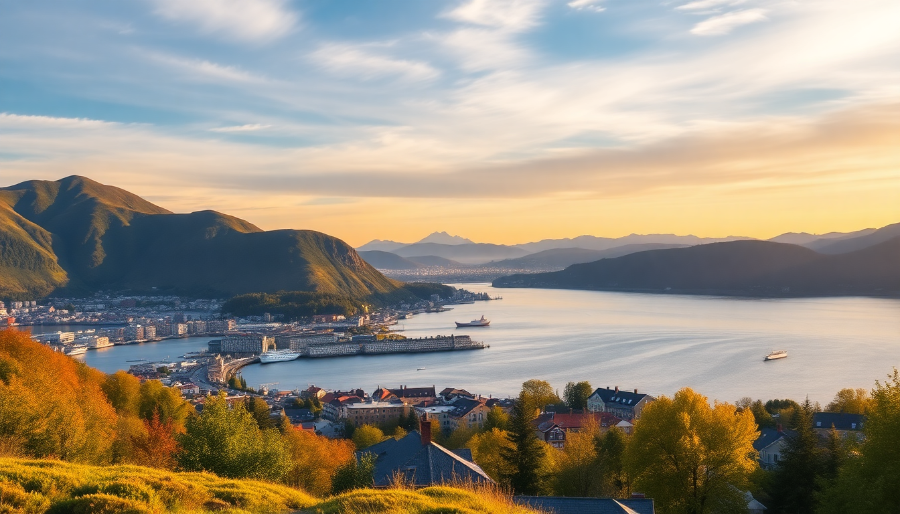

Best Cities to Visit in Norway: Oslo, Bergen, Tromsø & Stavanger

We landed in Oslo thinking we’d see the whole country in ten days. We didn’t. Norway is deceptive—distances are long, ferries are slow, and your wallet will weep. But after two trips and four cities, I can tell you exactly which ones deliver and which ones you can skip if you’re short on time. Here’s the real deal on Oslo, Bergen, Tromsø, and Stavanger.
Should you start in Oslo or skip it?
Oslo is the city everyone tells you to spend three days in. I’d say one full day is enough unless you’re a museum junkie. The city feels more like a big town—clean, quiet, and expensive. We stayed at Thon Hotel Opera right by the central station, and the location was perfect for the airport train (Flytoget). The Vigeland Sculpture Park is genuinely worth the walk, even in drizzle. The Fram Museum is the best museum in the city—skip the Viking Ship Museum (the actual ships are replicas now after the originals were moved).
- Neighborhood to stay: Sentrum (central) or Grünerløkka (younger, better cafes)
- Best cheap lunch: Mathallen Food Hall for a $15 bowl of ramen instead of a $40 sit-down meal
- Tourist trap warning: The Holmenkollen Ski Jump is a long bus ride for a view you can get from the Ekebergparken for free
- Real opinion: Oslo is fine, but it’s the least “Norway” of these four cities. Save your jetlag days here.
Is Bergen worth the hype and the rain?
Bergen gets called the most beautiful city in Norway. I’d say it’s the most characterful—but the rain is relentless. We had two sunny hours in three days. That said, the Bryggen wharf (the colorful wooden houses) is not overrated. Go early, before the cruise ship crowds. We booked a guided walk through GetYourGuide that explained the Hanseatic history, and it made the photos way more interesting. The Fløibanen funicular is worth the queue—but buy tickets online in advance or you’ll wait an hour.
- Where to eat: Bare Vestland for traditional fish soup (the smoked haddock version is better than the salmon)
- Best day trip: Flam Railway (book the morning train, not the afternoon—the light is better)
- Neighborhood to walk: Nordnes (quiet peninsula, great views of the fjord, zero tourists)
- Honest take: If you have only one city for Norway, make it Bergen. Just pack a waterproof jacket, not an umbrella—the wind will destroy it.
Is Tromsø really the best place to see the Northern Lights?
Yes, but with a catch. Tromsø is the most reliable Northern Lights city in Norway because it sits inside the aurora oval. We saw the lights two out of three nights in February. But you cannot just walk outside and see them. You need to join a tour that drives away from city light pollution. We used Greenlander (small group, warm suits included, hot chocolate). The city itself is smaller than you think—you can walk the entire center in 30 minutes. The Polar Museum is actually fascinating (whaling history, Arctic exploration), not a boring exhibit.
- Best time to visit: Late September to late March (November through January has polar night—24-hour darkness)
- Where to eat: Fiskekompaniet for seafood (the king crab is worth the $60), but book two weeks ahead
- Budget hack: Stay at Enter Viking Hotel instead of the fancy waterfront places—same location, half the price
- Don’t miss: The Arctic Cathedral at night when it’s lit up—the architecture is genuinely striking
- Real opinion: Tromsø is a one-trick pony (the lights), but that trick is spectacular. Don’t plan more than three days here.
Why do people visit Stavanger—and should you?
Stavanger is the city most tourists skip, and I think that’s a mistake. It’s the base for the Pulpit Rock (Preikestolen) hike, which is the single best day hike I’ve done in Norway. The climb takes about 2.5 hours each way, and the flat cliff hanging 604 meters over the Lysefjord is genuinely terrifying and incredible. The city itself is small but has the best food scene of the four. We ate at Renaa (Michelin-starred, but the lunch is $40 and accessible) and Tango Bar & Kjøkken for a more casual tasting menu.
- Neighborhood to walk: Gamle Stavanger (old town with white wooden houses—better than Bergen’s Bryggen for photography, fewer people)
- Best museum: Norwegian Petroleum Museum (sounds boring, but the interactive exhibits about offshore oil drilling are weirdly cool)
- Ferry tip: The Kolumbus ferry to the Pulpit Rock trailhead runs hourly. Don’t book a tour—do it yourself and save $60 per person.
- Honest take: Stavanger is for hikers and foodies. If you don’t want to climb, skip it. If you do, it’s the best city on this list.
What’s the best way to travel between these cities?
Norway is not a road trip country unless you have two weeks. We used a mix of Norwegian Air flights and Vy trains. The train from Oslo to Bergen is one of the world’s great rail journeys (7 hours, book a window seat on the left side). For Tromsø, you have to fly—there’s no train. Stavanger is best reached by flying from Oslo (45 minutes) or by the Kystbussen express bus from Bergen (5 hours, but beautiful coastal views). The Hurtigruten coastal ferry connects Bergen to Tromsø over 5 days—we didn’t have time, but friends who did said it’s worth it if you have a week to kill.
- Oslo to Bergen: Vy train, 7 hours, book in advance for $80 instead of $150
- Bergen to Tromsø: Fly with Norwegian Air (1.5 hours) or Hurtigruten ferry (5 days)
- Bergen to Stavanger: Kystbussen bus (5 hours, $50) or fly (40 minutes, $70)
- Pro tip: Get an eSIM from Airalo before you go—Norwegian roaming is expensive, and the train stations have terrible free WiFi
FAQ
How many days should I spend in each city? Oslo: 1 full day. Bergen: 2-3 days. Tromsø: 2-3 days (winter) or 1 day (summer). Stavanger: 2 days (one for the hike, one for the city). If you’re doing all four, plan 10 days minimum.
Is Norway really that expensive? Yes. A beer costs $12. A basic hotel room is $200. But you can save by eating lunch from grocery stores (Rema 1000 has good premade sandwiches for $8), using public transit instead of taxis, and booking trains/ferries in advance. The Oslo Pass is worth it if you plan to hit three museums.
Which city should I skip if I’m short on time? Skip Oslo. It’s the least unique. Fly directly into Bergen, then take the train to Oslo on your last day if you have a flight out. Or skip Stavanger if you don’t hike. Tromsø is non-negotiable if you want the Northern Lights.
Conclusion
- Oslo is a one-day stopover, not a destination—see the Vigeland Park and Fram Museum, then leave
- Bergen is the most charming city, rain and all—book the Fløibanen and a Bryggen walking tour
- Tromsø is for aurora hunters only—join a Greenlander tour, eat king crab, don’t linger
- Stavanger is the underdog—hike Pulpit Rock on your own, eat at Renaa, walk Gamle Stavanger
- Travel by train (Oslo-Bergen) and flights (everything else), and buy an eSIM before you land